Alphabet
Swedish has 29 letters. Tap a letter to hear it. The colored vowels are grouped from the worksheet: hard vowels and soft vowels.
Letters
Vowel Groups
- Hard vowelsA, O, U, Å. These often keep G and K hard: gata, god, kaka, kom.
- Soft vowelsE, I, Y, Ä, Ö. These often make G and K softer: gör, gift, kyrka, kök.
- ConsonantsB C D F G H J K L M N P Q R S T V W X Z.
Spelling Rules
These are the sound patterns from the alphabet pages. Use them as shortcuts when you read new words.
G Sounds
- G like hard Ggata, god, Gunilla.
- G like Jgör, gift, gym, Göteborg.
K Sounds
- K like hard Kkaka, kom, kan.
- K like soft tjkök, kyrka, kär.
Common Patterns
- sj / sk / stjsjuk, skjorta, stjärna.
- ng / rn / rssång, barn, först.
- cktack, mycket, kyckling.
Flashcards
Use this for quick repetition. Say the word yourself, then press the sound button and compare.
hej
Controls
Browser voices vary. If Swedish pronunciation sounds odd, install or select a Swedish voice in your system speech settings.
Quiz
A small self-check for the worksheet rules. The page keeps score only while it is open.
Question
Score
0 / 0
Try explaining every answer out loud in Swedish or English. That makes the rules stick faster.
Writing Practice
Write four words for each vowel, just like the worksheet. Your notes stay in this browser using local storage.
Tip: use the word lists above, then add new words from class.
Translation
Compare the scanned Swedish pages with English translations. QR codes are highlighted on the page photo and can be clicked when available.

Word Learning
Important Week 1 words from the alphabet and vowel material. Each entry shows Swedish, English, and a play button for pronunciation.
Week 1 In-class Material
No in-class material has been uploaded for Week 1 yet. This slot is ready for classroom pages when you add them later.
Planned structure: scanned class pages on the left, translation and pronunciation on the right, plus important words for practice.
SFI Week 2
Family words, possessive pronouns, simple questions, forms, and numbers, with corrected page photos, translations, QR videos, and word pronunciation practice.

Translation
Compare the corrected Swedish page photos with English translations. QR codes are highlighted on the page photo and can be clicked when available.
Word Learning
Important Week 2 words from the family material. Each entry shows Swedish, English, and a play button for pronunciation.
Possessive Pronoun Chart
Use this as a Week 2 reference for Swedish possessive pronouns. The forms change for en-words, ett-words, and plural nouns when the pronoun is variable.
| Owner | En-word | Ett-word | Plural | English | Example |
|---|---|---|---|---|---|
| jag | min | mitt | mina | my | min mamma, mitt barn, mina syskon |
| du | din | ditt | dina | your | din pappa, ditt namn, dina barn |
| han | hans | hans | hans | his | hans syster, hans barn, hans kusiner |
| hon | hennes | hennes | hennes | her | hennes bror, hennes namn, hennes föräldrar |
| den / det | dess | dess | dess | its | dess namn, dess barn, dess färger |
| vi | vår | vårt | våra | our | vår familj, vårt hus, våra barn |
| ni | er | ert | era | your plural | er lärare, ert klassrum, era böcker |
| de | deras | deras | deras | their | deras mamma, deras hem, deras frågor |
| reflexive | sin | sitt | sina | one's own / his own / her own / their own | Anita pratar med sin bror. Barnen träffar sina kusiner. |
| general | ens | ens | ens | one's | ens familj, ens namn, ens vänner |
Tip: sin, sitt, sina points back to the subject of the same sentence. Compare: Hon träffar sin syster means she meets her own sister, but Hon träffar hennes syster means she meets another woman's sister.
Week 2 In-class Material
No in-class material has been uploaded for Week 2 yet. This slot is ready for future classroom pages.
When you add files, I can convert them into the same translation and word-learning format.
SFI Week 3
A normal day, daily routines, clock times, parts of the day, listening tasks, and short writing practice, with iPhone page photos converted into study pages.

Translation
Compare the Week 3 page photos with English translations. QR codes are highlighted on the page photo and can be clicked when available.
Word Learning
Important Week 3 words from the daily routine and clock-time material. Each entry shows Swedish, English, and a play button for pronunciation.
Week 3 In-class Material
No in-class material has been uploaded for Week 3 yet. This slot is ready for future classroom pages.
The current Week 3 pages remain classified as off-class material.
SFI Week 4
In-class material about weather, November, sentence order, question words, pronouns, and noun plural practice.

In-class Translation
Compare the Week 4 classroom page photos with English translations and notes.
In-class Word Learning
Important Week 4 in-class words. Each entry shows Swedish, English, and a play button for pronunciation.
Off-class Translation
Compare the Week 4 off-class weather booklet photos with English translations and QR video links.
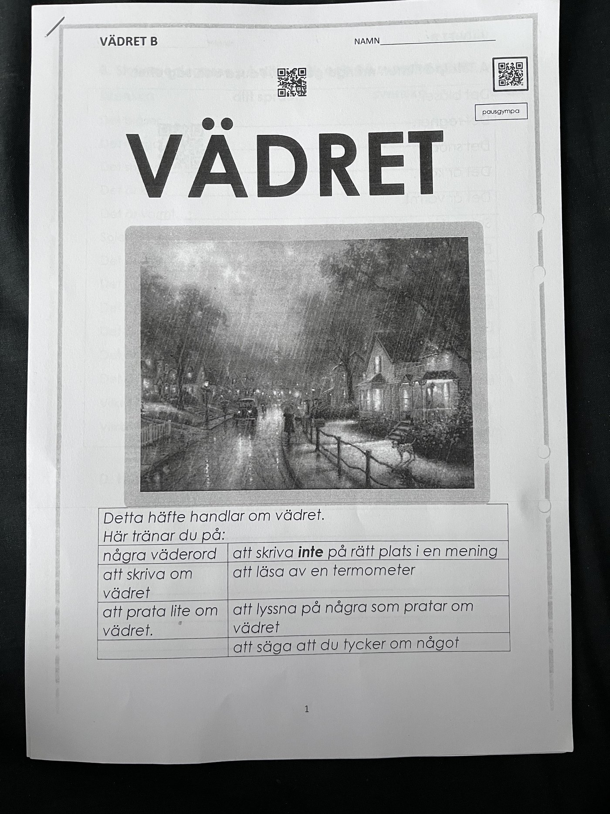
Off-class Word Learning
Important Week 4 off-class weather words. Each entry shows Swedish, English, and a play button for pronunciation.
SFI Week 5
Clothes, shopping phrases, colors, patterns, adjective forms, receipts, laundry labels, and short clothing descriptions.
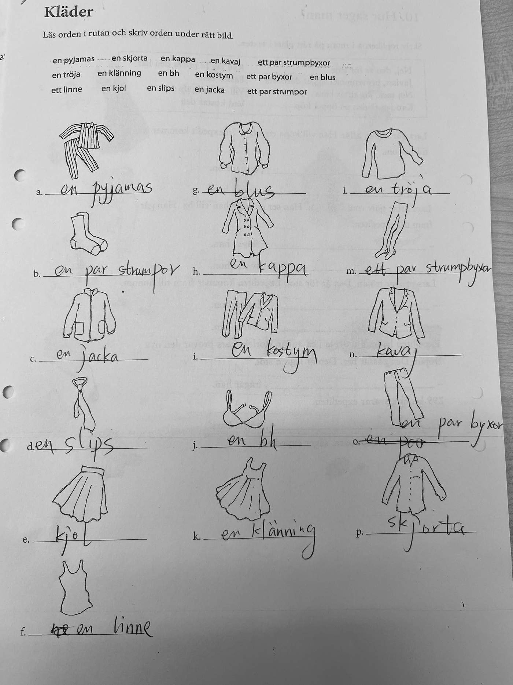
In-class Translation
Compare the Week 5 classroom page photos with English translations and notes.
In-class Word Learning
Important Week 5 in-class words. Each entry shows Swedish, English, and a play button for pronunciation.
Off-class Translation
Compare the Week 5 off-class clothes booklet photos with English translations and QR video links.
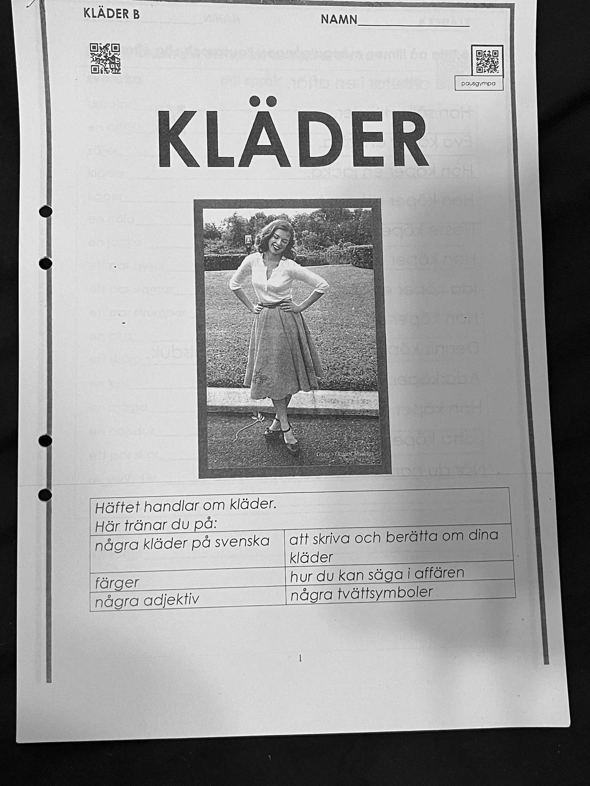
Off-class Word Learning
Important Week 5 off-class words. Each entry shows Swedish, English, and a play button for pronunciation.
SFI Week 6
In-class material about opposites, adjective practice, describing people, weather phrases, and reading comprehension.
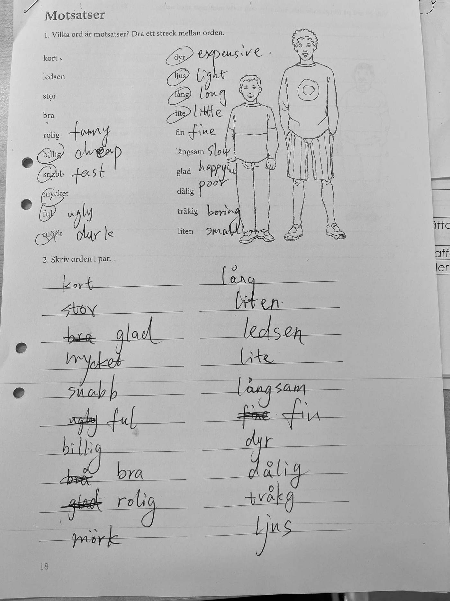
In-class Translation
Compare the Week 6 classroom page photos with English translations and notes.
In-class Word Learning
Important Week 6 in-class words. Each entry shows Swedish, English, and a play button for pronunciation.
Off-class Translation
Compare the Week 6 off-class housing booklet photos with English translations and QR video links.
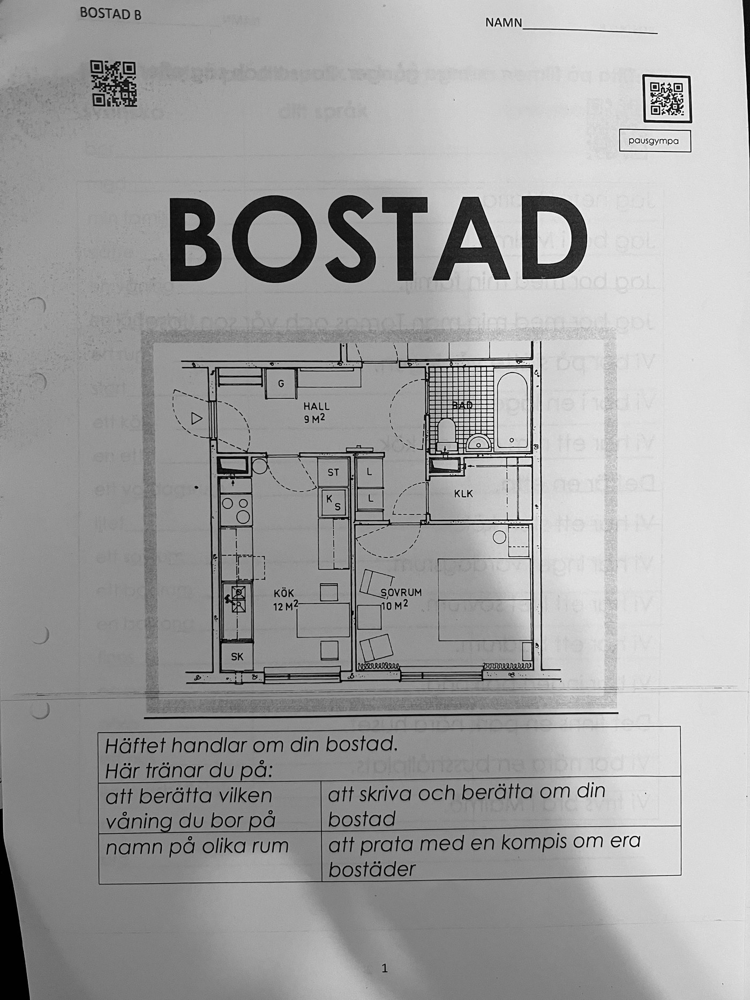
Off-class Word Learning
Important Week 6 off-class housing words. Each entry shows Swedish, English, and a play button for pronunciation.
SFI Week 7
In-class verb and housing practice plus off-class housing vocabulary, grammar, reading, and sentence exercises.
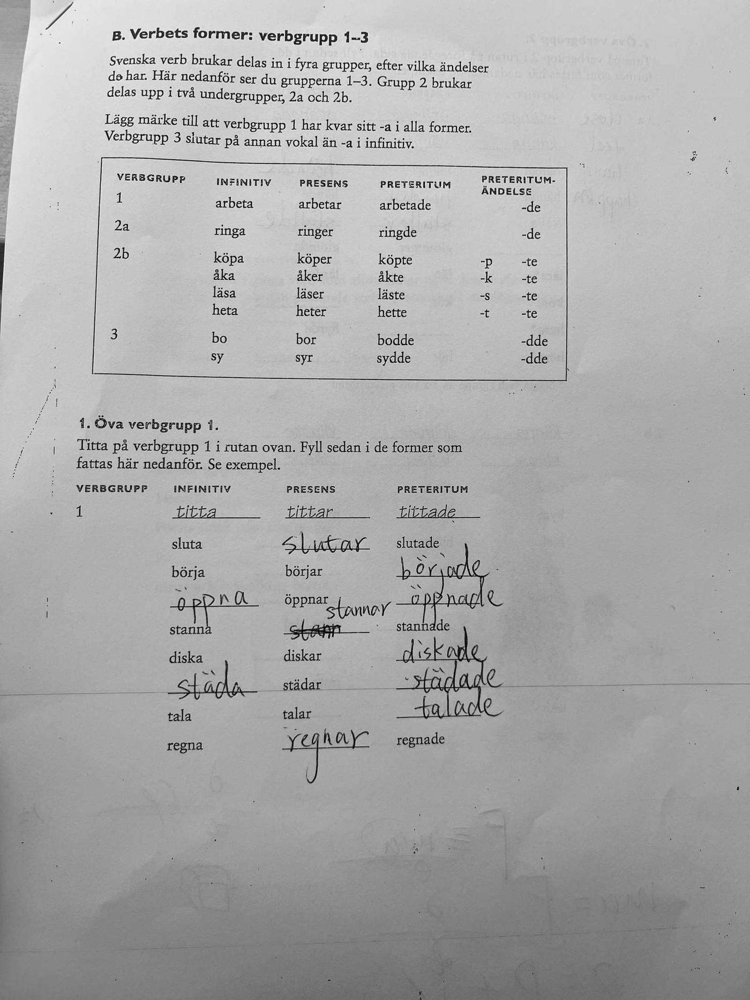
In-class Translation
Compare the Week 7 classroom page photos with English translations. The original Swedish text and worksheet prompts are represented on the right.
In-class Word Learning
Important Week 7 in-class verb and housing words. Each entry shows Swedish, English, and a play button for pronunciation.
Off-class Translation
Compare the Week 7 off-class housing booklet photos with English translations and QR media links.
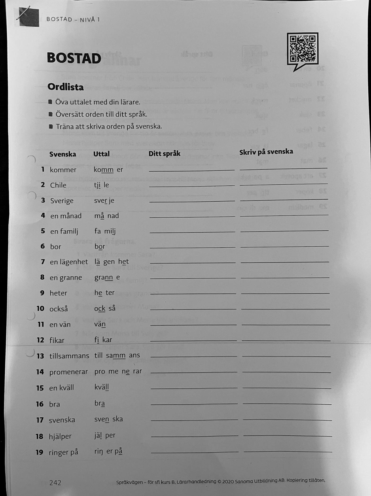
Off-class Word Learning
Important Week 7 off-class housing words. Each entry shows Swedish, English, and a play button for pronunciation.
SFI Week 8
In-class reading and study-skills material about distance learning, Lärcentrum support, and practical habits for learning more effectively.
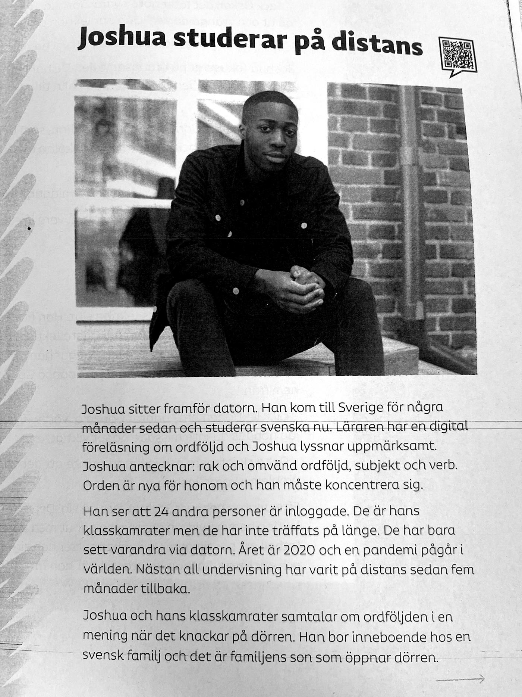
In-class Translation
Compare the Week 8 classroom page photos with English translations. Click Swedish snippets on the right to hear the pronunciation.
In-class Word Learning
Important Week 8 in-class words from the reading and study-skills pages. Each entry shows Swedish, English, and a play button for pronunciation.
Off-class Material
No Week 8 off-class page photos were found in the raw image folder yet.
When Week 8 off-class images are added later, put them in the Week 8 raw folder and run the same update process. This section is already reserved for them.
SFI Week 9
Grocery shopping Swedish: the classroom story I affären with receipt reading, plus the MAT B+ food booklet with groceries, shop dialogues, kitchen verbs, and QR video exercises.
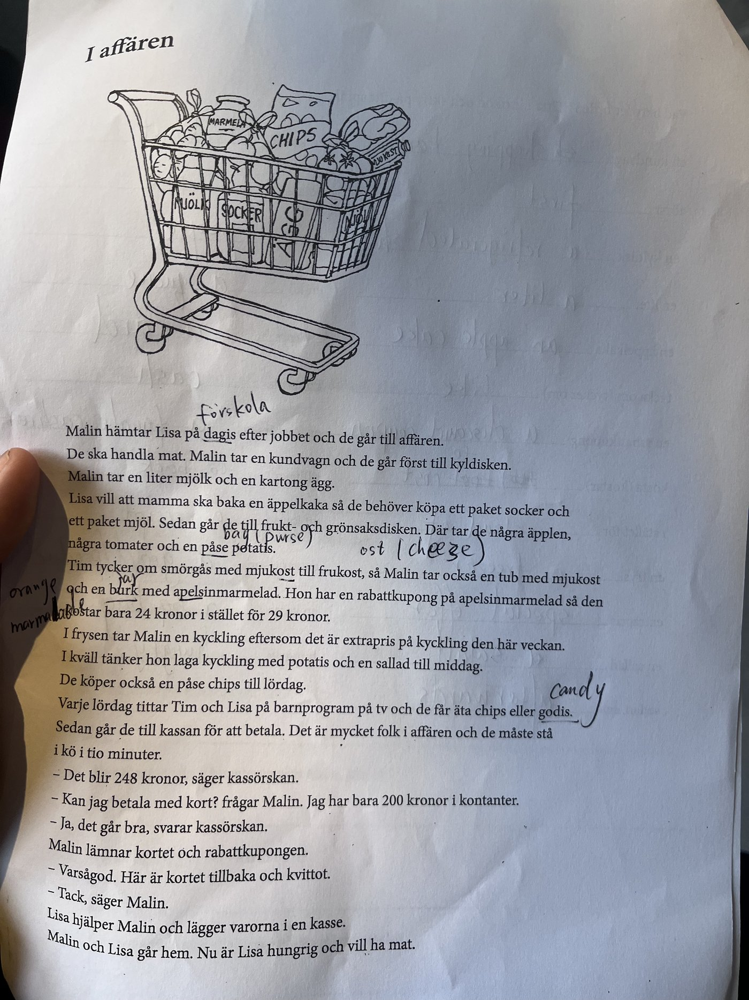
In-class Translation
Compare the Week 9 classroom page photos with English translations. Click Swedish snippets on the right to hear the pronunciation.
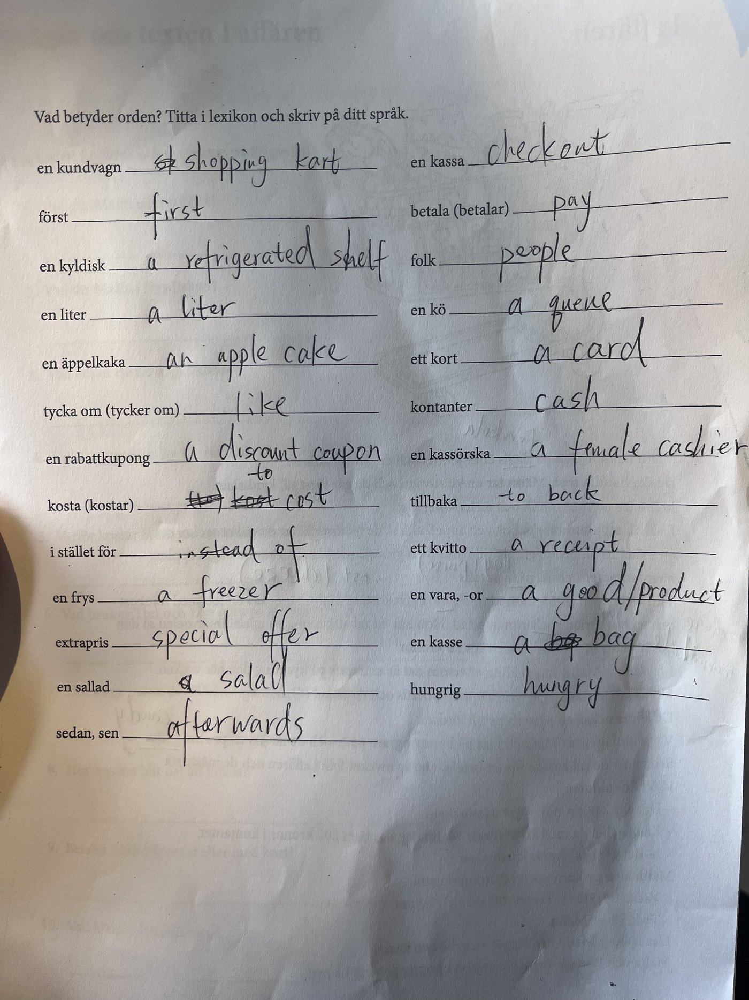
In-class Word Learning
Important Week 9 in-class words from the shopping story and receipt pages. Each entry shows Swedish, English, and a play button for pronunciation.
Off-class Translation
Compare the Week 9 MAT B+ booklet photos with English translations. QR overlays are clickable and open the linked videos.
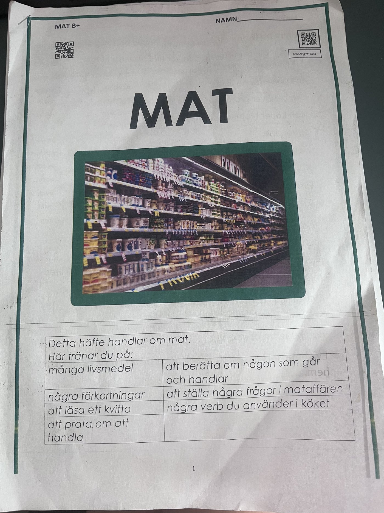
Off-class Word Learning
Important Week 9 off-class words from the MAT B+ booklet. Each entry shows Swedish, English, and a play button for pronunciation.